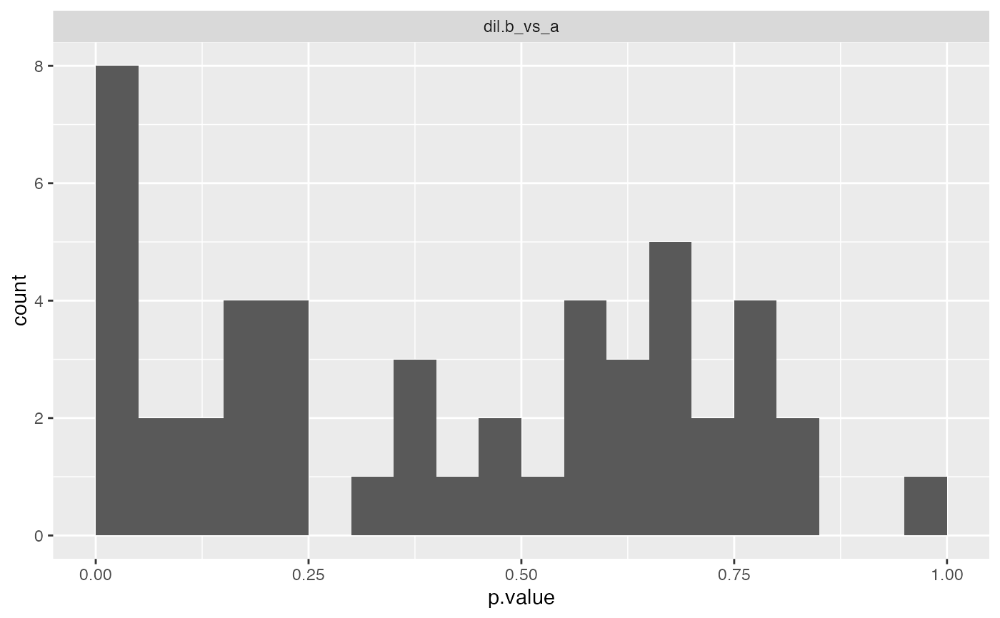
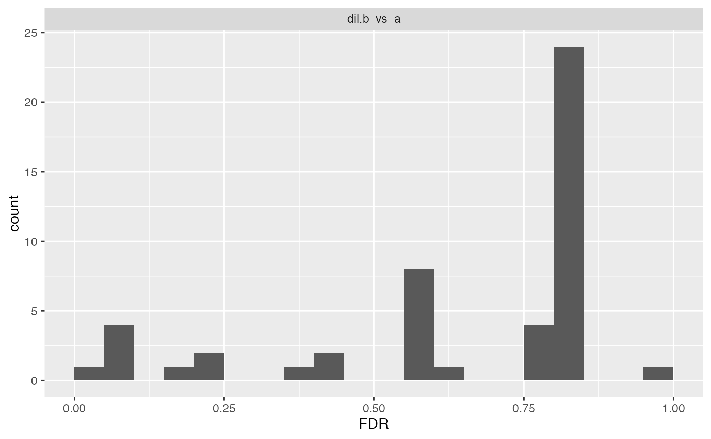

Limma moderated contrasts
Limma moderated contrasts
See also
Other modelling:
ContrastsPlotter,
ContrastsProDA,
ContrastsROPECA,
ContrastsSAINTexpress,
ContrastsSimpleImpute,
ContrastsTable,
Contrasts,
INTERNAL_FUNCTIONS_BY_FAMILY,
LR_test(),
Model,
build_model(),
get_complete_model_fit(),
get_imputed_contrasts(),
get_p_values_pbeta(),
isSingular_lm(),
linfct_all_possible_contrasts(),
linfct_factors_contrasts(),
linfct_from_model(),
linfct_matrix_contrasts(),
merge_contrasts_results(),
model_analyse(),
model_summary(),
moderated_p_limma_long(),
moderated_p_limma(),
my_contest(),
my_contrast_V1(),
my_contrast_V2(),
my_contrast(),
my_glht(),
pivot_model_contrasts_2_Wide(),
plot_lmer_model_and_data(),
plot_lmer_peptide_noRandom(),
plot_lmer_peptide_predictions(),
plot_lmer_predicted_interactions(),
strategy_lmer(),
summary_ROPECA_median_p.scaled()
Super class
prolfqua::ContrastsInterface -> ContrastsModerated
Public fields
ContrastClass implementing the Contrast interface
modelNamename of model
subject_Idcolumns with subject_Id (proteinID)
p.adjustfunction to adjust p-values
Methods
Inherited methods
Method new()
initialize
Usage
ContrastsModerated$new(
Contrast,
modelName = paste0(Contrast$modelName, "_moderated"),
p.adjust = prolfqua::adjust_p_values
)Method get_Plotter()
get ContrastsPlotter
Method to_wide()
convert to wide format
Usage
ContrastsModerated$to_wide(columns = c("p.value", "FDR"))Examples
istar <- prolfqua_data('data_ionstar')$normalized()
istar$config <- old2new(istar$config)
istar_data <- dplyr::filter(istar$data ,protein_Id %in% sample(protein_Id, 100))
pepIntensity <- istar_data
config <- istar$config$clone(deep = TRUE)
ld <- LFQData$new(pepIntensity, config)
lProt <- ld$get_Aggregator()$medpolish()
#> starting aggregation
lProt$rename_response("transformedIntensity")
modelFunction <-
strategy_lm("transformedIntensity ~ dilution.")
mod <- build_model(
lProt,
modelFunction)
#> Joining, by = "protein_Id"
Contr <- c("dil.b_vs_a" = "dilution.a - dilution.b")
contrast <- prolfqua::Contrasts$new(mod,
Contr)
contrast <- ContrastsModerated$new(contrast)
bb <- contrast$get_contrasts()
#> determine linear functions:
#> compute contrasts:
#> computing contrasts.
#> Joining, by = c("protein_Id", "contrast")
csi <- ContrastsSimpleImpute$new(lProt, contrasts = Contr)
merged <- merge_contrasts_results(contrast, csi)
#> completing cases
#> dil.b_vs_a=dilution.a - dilution.b
#> dil.b_vs_a=dilution.a - dilution.b
#> Joining, by = c("protein_Id", "contrast")
#> completing cases
#> Joining, by = c("protein_Id", "contrast")
#> Joining, by = c("protein_Id", "contrast")
merged$more$get_contrasts() |> dim()
#> [1] 0 13
merged$merged$get_contrasts() |> dim()
#> [1] 68 13
merged$same$get_contrasts() |> dim()
#> [1] 68 13
cs <- contrast$get_contrast_sides()
cslf <- contrast$get_linfct()
ctr <- contrast$get_contrasts()
ctrwide <- contrast$to_wide()
cp <- contrast$get_Plotter()
cp$histogram()
#> $p.value

#>
#> $FDR

#>
cp$volcano()
#> $FDR
 #>
cp$ma_plot()
#>
cp$ma_plot()